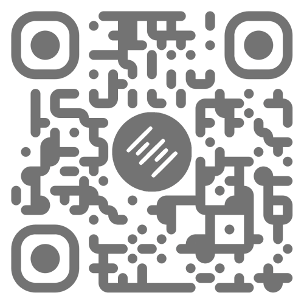

Trek Ellwood
Ara Institute of Canterbury | Bachelor of ICT, 2026 Sem 1

Smarter Defaults for
Patient Note Workflows
Patient Note Workflows
Auto-Assign Consultant for Patient Notes | Elixir Software Limited


Backlog
— Context
Introduction
In Elixir's healthcare software, admin staff must manually select a consultant from a dropdown every time they create a patient note. In busy multi-doctor clinics, this repetitive task increases clicks, slows workflows, and risks selecting the wrong consultant.
Aim
To implement a default consultant assignment feature that auto-populates across 12 patient note types, reducing repetitive manual steps while preserving manual override capability.
Problem Statement
- Long consultant lists in multi-doctor clinics
- Repeated selection for every note, letter, referral, form
- Increased risk of wrong consultant assignment
- 12 different note types all requiring the same manual step
In Progress
— Method
Lean-Agile Approach
- Kanban:1 GitHub Projects board (Todo → In Progress → Review → Done)
- Lean:2 Incremental delivery, eliminate waste, minimal viable changes
- DevOps:3 CI/CD with automated linting & testing
- Scrumban:4 Sprint-like focus within continuous flow
Development Workflow
- Branch-based development with pull requests
- Code review by senior developers
- Incremental implementation: one note type at a time
- Priority-ordered across 12 note types
QA Pipeline5
- Unit testing per component
- Structured usability test scenarios
- Three-stage promotion:
Staging → Beta → Production - QA sign-off before each promotion
Done
— Delivered
Outcomes
- All 12 note types implemented and deployed to production
- All 5 functional + 5 non-functional requirements met
- 300 hours completed by Week 12 (5 weeks ahead)
- Zero scope changes required
- Feature live in clinical practices across NZ
Figure 1 — User Settings
Screenshot: "Auto-assign Note Types to" dropdown
The new dropdown in User Settings, next to "Auto-assign tasks to"
Figure 2 — Auto-populated Note
Screenshot: Consultant field auto-populated
A patient note with consultant auto-populated from defaults
Review
— Reflect
Learnings
- Git workflows were the most critical skill gap not taught in coursework
- Legacy React componentDidMount issues required targeted debugging
- Built MinIO container to solve local vs staging environment differences
- Definition of Done works best as a pre-submission self-check
Conclusion
Small UX defaults in healthcare software have outsized impact on clinical efficiency. This feature eliminates repetitive consultant selection across 12 note types, reducing errors and saving admin time daily.
Future Work
- Role-based default assignments
- Practice-level defaults (not just per-user)
- Override frequency analytics
Lean-Agile Principles Applied
WIP Limits
— 1 note type at a time
Continuous Flow
— Kanban → continuous delivery
Feedback Loops
— Code review → QA → Staging → Prod
Eliminate Waste
— Minimal changes to stable codebase
Visual Management
— GitHub Projects board
Pull System
— Work pulled from backlog
Acknowledgements
- Course Convenor: Dr David Weir
- Co-Convenor: Phillip Roxborogh
- Academic Supervisor: Dr Dipendra Ghimire
- Industry Supervisor: Donncha McAuliffe — Elixir Software
References
- Radigan, D. (n.d.). Kanban. Atlassian. https://www.atlassian.com/agile/kanban
- What Is Lean Software Development? (n.d.). Scrum Alliance. https://resources.scrumalliance.org/Article/lean-software-development
- Atlassian. (n.d.). What is DevOps? https://www.atlassian.com/devops
- Atlassian. (n.d.). Scrumban. https://www.atlassian.com/agile/project-management/scrumban
- Punnam, P. (2025, March 23). QA in Agile Methodology. ACCELQ. https://www.accelq.com/blog/quality-assurance-in-agile-methodology/